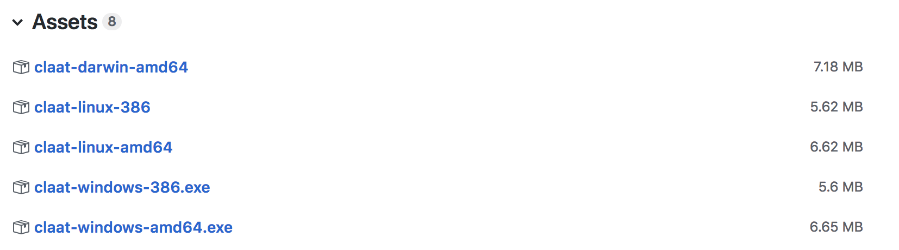
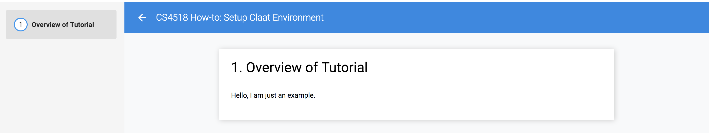

This tutorial will show you how to setup the Codelabs management & hosting tools claat in a Unix-based machine.
For more detail, refer to the tool github
Go to the official release link for the Codelabs command line tool claat, and download the binary according to your OS.
Fig: Precompiled Claat binaries for popular OSes.
For example, if you have a recent MacOS, download the claat-darwin-amd64 binary under Assets to a path, e.g., ~/Desktop.
Here is an example markdown, that contains the bare minimal. The first few lines contain the meta data that claat will parse. Among which, the important one is id.

Fig: An example markdown file called example_tutorial.md.
Recall that we have saved the claat binary to ~/Desktop in the previous step. By running the following commands in a terminal, you will see a similar output to the following screenshot. Inside the exampleTutorial directory, you will find the converted index.html.
cd ~/Desktop;
claat-darwin-amd64 export example_tutorial.md

Fig: claat export terminal output
If we run the following commands, claat will automatically fetch the dependencies: elements/ and bower_components/. These two directories contain javascript and style files that will be used by the index.html
cd ~/Desktop
claat-darwin-amd64 serve
After downloading the dependencies, a local server is also created:

Fig: claat starts a local server that listens at 9090 port.
A new browser tab should open automatically for you, and display hyperlinks for all resources in the current directory, i.e., ~/Desktop.

Fig: claat starts a local server that listens at 9090 port.
Click on the hyperlink exampleTutorial/ will bring up the codelab style tutorial.
Fig: codelab style tutorial served at localhost:9090.
As explained in this link, most popular web servers should be able to host the generated codelab resources.
In our example, simply upload the following three directories: elements/, bower_components/, exampleTutorial/ to your favorite web server.
In this tutorial, we explain how to setup the official Codelabs management & hosting tools in Unix-like environment, and how to verify that the markdown tutorial is rendered correctly in local host.